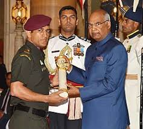
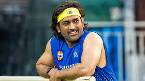
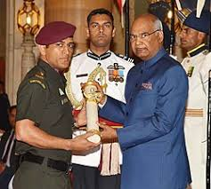
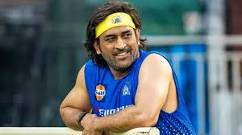

Born in Ranchi, Dhoni made his first class debut for Bihar in 1999. He made his debut for the Indian cricket
team on
23 December 2004 in an ODI against Bangladesh and played his first test a year later against Sri Lanka. In
2007, he
became the captain of the ODI side before taking over in all formats by 2008. Dhoni retired from test
cricket in
2014 but continued playing in limited overs cricket till 2019. He has scored 17,266 runs in international
cricket
including 10,000 plus runs at an average of more than 50 in ODIs.
In the Indian Premier League (IPL), Dhoni plays for Chennai Super Kings (CSK), leading them to the final on
ten
occasions and winning it five times (2010, 2011, 2018, 2021 and 2023 ) jointly sharing this title with Rohit
Sharma
. He has also led CSK to two Champions League T20 titles in 2010 and 2014. Dhoni is among the few batsmen to
have
scored more than five thousand runs in the IPL, as well as being the first wicket-keeper to do so.
In 2008, Dhoni was awarded India's highest sport honour Major Dhyan Chand Khel Ratna Award by Government of
India.
He received the fourth highest civilian award Padma Shri in 2009 and third highest civilian award Padma
Bhushan in
2018. Dhoni holds an honorary rank of Lieutenant colonel in the Parachute Regiment of the Indian Territorial
Army
which was presented to him by the Indian Army in 2011.
 


